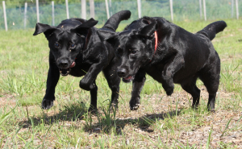

犬は三日飼うと三年恩を忘れない。
その頃、本所から四谷箪笥町たんすまち、
芝片門前、三田の赤羽橋辺まで
襖を積んだ車を引いて使いにやらされる
行きにその犬を車の梶棒へ綱でつなぐとグングン
車を引いてくれる。先方へ行って使い賃をもらうと、
パンを買って半分は犬に食べさせて、
空になった車へ犬を載せて引いてくる。
今でもバタヤさんが
DOG1
-
犬は三日飼うと三年恩を忘れない。
ぼくがあまり犬を可愛がりすぎるので、伯父がぼくに内 緒でどこかへ捨ててきたらしい。二、三日の間は仕事も 手につかず、食べる物もうまくない。それこそ血眼にな って探したがわからない。
-

犬は三日飼うと三年恩を忘れない。
去る者は日々に疎し、というか、二月、三月とすぎ、半 年もすぎるとまるで思いださないというより、どんな犬 であったか思いだせないくらいになっていた。
-

犬は三日飼うと三年恩を忘れない。
すると或る日、京橋八丁堀まで例によって車を引いてゆ き、帰りに、その頃「中外商業新聞」というのがあっ て、その前の坂本公園という、いやに淋しい公園の前ま でくると、だし抜けにぼくに飛びついた犬がある。
DOG2
-

びっくりして見ると、半年ほど前にわが 子のように可愛がったその犬である。
-

犬も夢中になって飛びつく、ぼくも暫時 われを忘れて抱きかかえて、
-
また改めて伯父に頼んで飼ってもらった が、その犬の顔は今でも眼をつぶると瞼のうちに見えるようだ。
その頃、本所から四谷箪笥町たんすまち、
芝片門前、三田の赤羽橋辺まで
襖を積んだ車を引いて使いにやらされる
行きにその犬を車の梶棒へ綱でつなぐと
グングン
車を引いてくれる。
先方へ行って使い賃をもらうと、
パンを買って
半分は犬に食べさせて、
DOG3
| 2018.02.09 新着 | とんだの犬の話になったが、いろいろの種類の犬も飼ってみたが |
| 2018.02.09 新着 | 何の何種という系統正しい犬でも、名もない雑種の野良犬でも、飼えば同じように可愛いもの |
| 2018.02.09 新着 | 若い時分、駄犬のことで犬捕りの人夫と殴りあいの喧嘩をしたことがある |
| 2018.02.09 新着 | 本所太平町に住んでいる時分、下手な鉄砲をやっていたので |
| 2018.02.09 新着 | ポインターの猟犬を飼っていたが、これも子犬からもらってきて |